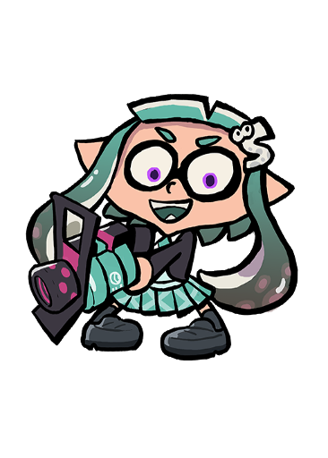

#10: .52 Gal
Its slow shooting speed may seem off-putting at first, but don't let that distract you from the concentrated power of its shots, which can take down an opponent in 2 hits! With the splash wall to protect you from the frontliners and the Killer Wail 5.1 to keep them at bay, it's perfect for almost any situation.

#9: Forge Splattershot Pro
Its shots are very concentrated toward the middle. It has good range with decent damage output. If that's worrying, its Suction Bomb and Booyah Bomb combo help at keeping your opponents on their toes. It's also very beneficial in Splat Zones, both to fulfill the objective and to keep the opponents away.